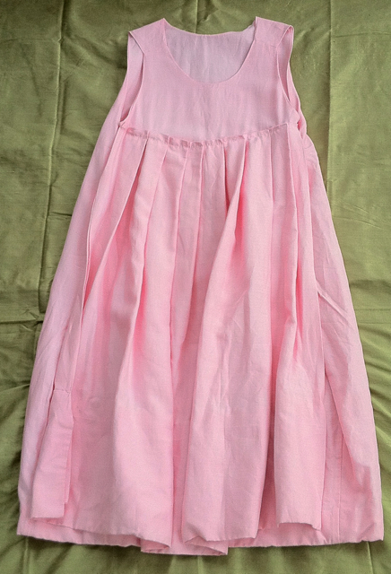

Pleated Apron Panel Dress
- Description: Round neckline: low in front, high in back. Sleeveless. Calf-length. A-line. Pleated apron skirt panel in front. Option to wear in reverse with pleated panel at back. Two layer fabric construction. Generous hem.
- Fabric: 100% Ramie Linen.
- Care: Machine wash cold, hang to dry, iron if needed.
- Price (USD): $288
previous dress
next dress